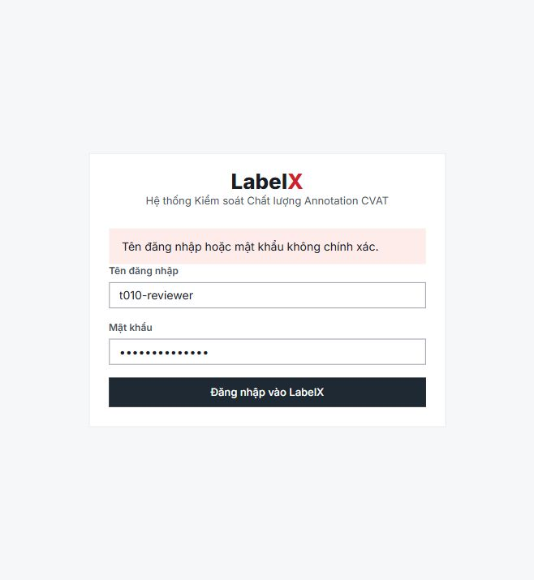
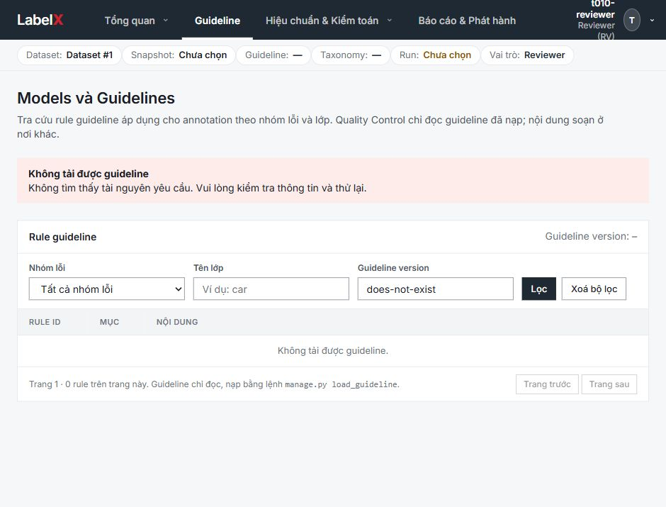
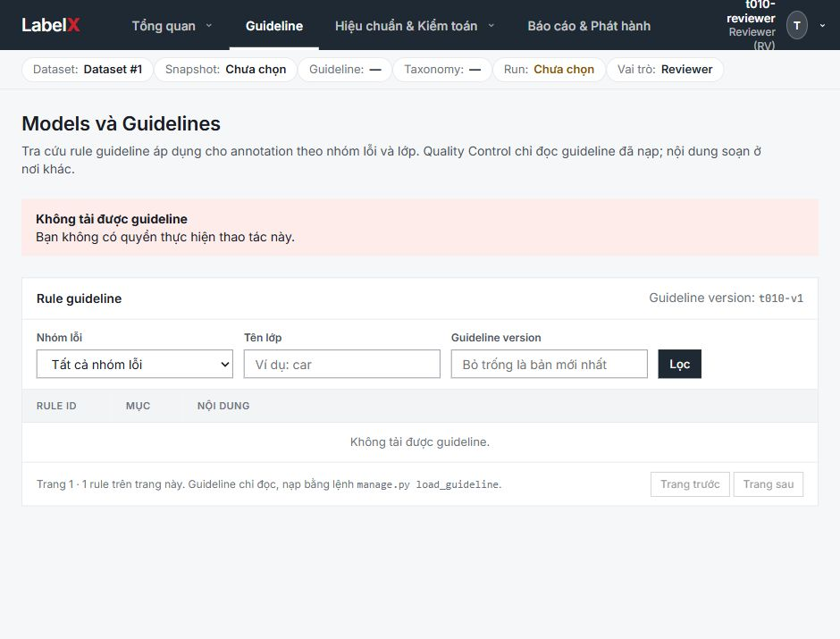

T-010 — Thông báo lỗi API dùng chung
Usage Purpose
Bằng chứng triển khai T-010 cho @tdt2112 (issue #35, E-01). Task ở review; báo cáo này xác nhận triển khai và kiểm tra local, phê duyệt PR theo CR-102 vẫn chờ người duyệt.
Record Metadata
- Report ID:
T-010-tdt2112 - Title:
Thông báo lỗi API tiếng Việt từ contract - Owner:
Trần Đức Thọ (@tdt2112) - Executor:
Codex (/root) - Status:
complete - Task ID:
T-010 - Epic ID:
E-01 - Report Date:
2026-10-07 - Base Commit:
decfe71a033b68a9deff1e620d5a0155073c3a15 - Branch:
feat/T-010-e01-error-messages - Implementation Commit:
16e62a2447dcde20bd08d4566f8c3ef70ae35162
Scope
- Implemented:
Ánh xạ đủ 17 ErrorCode; fallback; trace cho 5xx; tích hợp login/logout/session/guideline; test từ contract sinh lại; kiểm mã backend; CORS trace; QA trình duyệt trên API thật. - Not Implemented:
Màn lỗi riêng (ngoài scope); T-016; phê duyệt/merge PR do maintainer theo CR-102.
Changes Made
| File or Artifact | Change Summary | Task ID |
|---|---|---|
| src/frontend/src/lib/api/errors.ts | Nguồn duy nhất: 17 thông báo, fallback HTTP/mạng, ApiRequestError, body/header request ID, giữ details có cấu trúc. Không hiển thị diagnostic thô. | T-010 |
| src/frontend/src/lib/api/client.ts | Dùng lớp lỗi chung; xử lý HTML/JSON hỏng/trống; chỉ 401 hoặc 403 NOT_AUTHENTICATED phát hết phiên. | T-010 |
| src/frontend/src/lib/auth/auth-context.tsx; app/login/page.tsx; app/configuration/guidelines/page.tsx | Login, session, logout, guideline dùng nguồn thông báo chung và truyền trace header. | T-010 |
| src/frontend/package.json; src/__tests__/api-errors.test.ts | pretest sinh contract.d.ts từ openapi.yaml; test lấy mọi mã từ union của file sinh, kiểm bảng đầy đủ và fallback. contract sinh lại không có thay đổi nội dung. | T-010 |
| src/frontend/src/__tests__/Login.test.tsx; Guidelines.test.tsx; api-auth.test.ts | Kiểm hiển thị thực qua component/client, lỗi 400/403/404, 5xx JSON/HTML, mã lạ/body lỗi, giữ session khi lỗi quyền/máy chủ. | T-010 |
| src/backend/config/settings.py; tests/test_error_contract.py | Expose X-Request-ID qua CORS; 14 test kiểm literal codes view/handler/middleware và trace của exception/HTML 5xx. | T-010 |
| src/frontend/evidence/t010/*.png; .agent/*-@tdt2112.html | Ảnh QA thực và record riêng theo CR-100. | T-010 |
Related Files
- Task Records: Issue #35; T-010 canonical
- Context Packages:
AGENT.html, CLAUDE.md, frontend/AGENTS.md, task-board#t-010, epics#e-01, openapi.yaml - Task Board: task-board-@tdt2112.html
- Current Context: current-context-@tdt2112.html
- Decisions:
.agent/governance/decisions/DEC-001.html - Change Requests:
CR-100, CR-101, CR-102, CR-103, CR-104 - Risks or Blockers:
none unresolved for implementation - Review Request: Codex independent_review technical review; human CR-102 pending
- Commits: 16e62a2447dcde20bd08d4566f8c3ef70ae35162; per-user commit map
Command Evidence
| Command | Result | Evidence |
|---|---|---|
| npm ci --no-audit --no-fund | passed | 444 packages từ package-lock; không đổi dependencies. |
| uv sync --frozen (backend); uv sync --frozen --extra dev --python 3.10 (detector) | passed | Môi trường riêng từ uv.lock; backend Python 3.12, detector Python 3.10. |
| make check (Windows: chạy từng target tương đương) | passed via equivalent targets | Máy không có make; đã chạy lint + typecheck + test + detector-lint + detector-test + validate-kit. PostgreSQL riêng localhost:55410. |
| npm run build | passed | Production build Next 16.3.8; 14 routes, không còn lỗi font sau cấp truy cập mạng cho build. |
Verification Evidence
| Check | Result | Evidence |
|---|---|---|
| AC: mọi ErrorCode có thông báo | passed | 17 ca lấy từ generated contract; exact-key comparison; satisfies Record<ErrorCode,string>. npm pretest tự sinh lại contract. |
| AC: mã backend thuộc contract | passed | test_backend_literal_error_codes_are_declared_in_contract + test_error_codes_match_contract; 17 mã serializer và 5 mã hiện phát đều hợp lệ. |
| AC: các màn dùng module chung | passed | Login/Guidelines integration và QA thật 400/403/404. |
| Frontend lint / typecheck / test | passed | 119 tests / 10 files; ESLint sạch; next typegen + tsc sạch. |
| Backend Ruff / mypy / pytest | passed | 56 files format; mypy 44 source files; 98 tests trên PostgreSQL 17, dependency khóa. |
| Detector Ruff / pytest | passed | 10 files format; 10 tests, có HTTP fixture localhost. |
| Production build / client bundle | passed | npm run build pass; rg password123 .next/static không có kết quả. |
| Framework + per-user ownership | passed | scripts/validate-framework.py; mọi .agent file mới thuộc @tdt2112, file chính không sửa. |
| Manual login400 / guideline404 / guideline403 | passed | Production frontend localhost:3010 gọi Django thật localhost:8000. DB riêng, tài khoản QA không có trong bundle. 403 vẫn giữ trang/phiên. |
| Independent source review | passed after fixes | Finding: 5xx NOT_AUTHENTICATED không được làm mất session; đã sửa và thêm regression. Thứ tự middleware CORS test khớp production. |
| GitHub CI / CR-102 maintainer approval | pending at report time | Local checks complete. Không tự ký duyệt; task chờ reviewer và CI của PR. |
Ảnh từ trình duyệt (dữ liệu QA riêng):



Deviations
- Plan Deviations:
Không đổi scope/contract. Chạy các target tương đương make check trên Windows vì máy không có make. - Approved By:
Task #35 và yêu cầu triển khai trực tiếp của user; approval PR theo CR-102 còn pending. - Known Limitations:
Thông báo cố định theo code nên FORBIDDEN cho CSRF có nội dung khái quát. Request ID chỉ hiện khi máy chủ/proxy thực sự cung cấp body hoặc header. Audit AST kiểm literal codes hiện có, không chứng minh mã tính động trong mọi code tương lai.
Các lần kiểm đầu bị sandbox chặn socket localhost/tải font; chạy lại với truy cập cần thiết đã pass. Không sửa logic sản phẩm để né các kiểm tra.
Completion Criteria
- [x] Every reported change maps to T-010.
- [x] Acceptance criteria results and evidence are linked.
- [x] Deviations and limitations are explicit.
- [x] Build, lint, and test checks are recorded.
- [x] Independent technical review linked; human CR-102 approval pending.
- [x] Git Nexus per-user mapping records the implementation commit.
Forbidden Actions
- Do not report unperformed work as implemented.
- Do not omit failed or unexecuted required checks.
- Do not claim completion with unmet task acceptance criteria.
- Do not claim review approval or move the task to
DONE. - Do not change roadmap or acceptance criteria.
- Do not use this report as a substitute for independent review.
- Do not include secrets or sensitive command output.
Output Requirements
- Saved as
.agent/reports/implementation/T-010-@tdt2112.html. - Headings/table columns preserved from implementation-report-template.html.
- Implementation complete; task
review, merge requires CR-102.